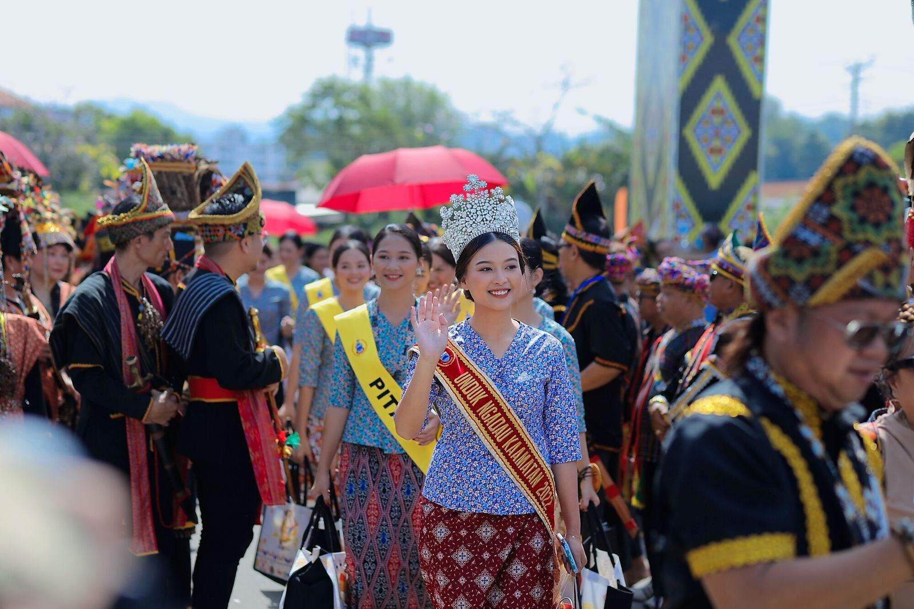

Festivals · Culture
Pesta Kaamatan 2027 (Sabah Harvest Festival, state finale)
- Dates
- Dates TBA
- Venue
- KDCA Hongkod Koisaan Hall, Penampang
- Location
- Penampang, Malaysia
- Format
- In-person
- Category
- Culture
- Industry
- Culture
- Organiser
- Kadazandusun Cultural Association (KDCA)
- Official website
- https://sabahtourism.com/event/kaamatan-festival/
About
Celebrated throughout May; Sabah Tourism says the biggest celebrations are on 30 and 31 May each year (Sabah public holidays).
Topics: Kadazandusun culture, harvest festival, Unduk Ngadau, traditional music and dance.
No organiser attendance figure found on official pages (24 Nov 2026). Ranked by an estimated size tier 'medium' (our judgement from format, venue and scale, not an official number).
Sources
- Official — https://sabahtourism.com/event/kaamatan-festival/